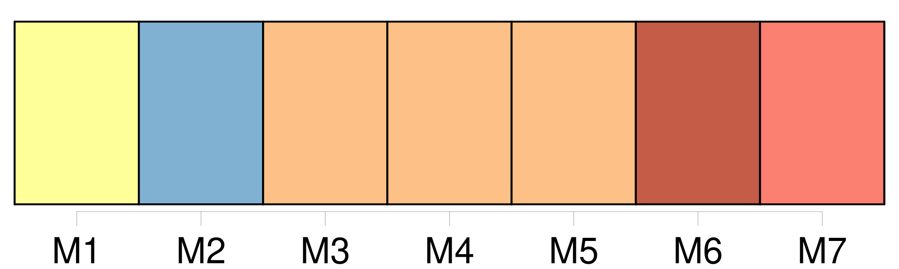
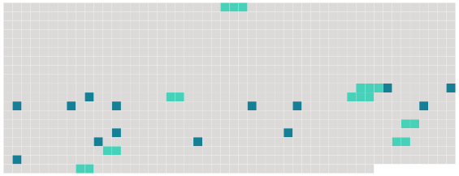

Longueur nb maillons : 22 mentions |
  |
Il parlait de Régulus, d’ Arminius, des chasseurs de Lützow, de Kœrner et de Frédéric Stabs, celui qui voulait tuer [l’ empereur Napoléon] [12 phrases] Ils aimaient l’ un et l’ autre à revenir souvent sur la légende fabuleuse de [ce conquérant corse] [qui] avait pris l’ Europe. Grand-père [l’] avait connu. Il avait failli se battre contre [lui] Mais il savait reconnaître la grandeur de [ses adversaires] ; il l’ avait dit vingt fois : il eût donné un de ses bras, pour qu’ [un tel homme] fût né de ce côté du Rhin. Le sort [l’] avait voulu autrement : il [l’] admirait, et il [l’] avait combattu, – c’ est-à-dire qu’ il avait été sur le point de [le] combattre. Mais comme [Napoléon] n’ était plus qu’ à dix lieues, et qu’ ils marchaient à [sa] rencontre, une subite panique avait dispersé la petite troupe dans une forêt, et chacun s’ était enfui en criant : « Nous sommes trahis!! [1 phrases] – Mais Christophe le rappelait impatiemment aux exploits [du héros] ; et il était dans l’ extase de ces chevauchées merveilleuses par le monde. Il [le] voyait suivi de peuples innombrables, qui poussaient des cris d’ amour, et qu’ un geste de [lui] lançait en tourbillons sur les ennemis toujours en fuite. [1 phrases]
Grand-père y ajoutait un peu, pour embellir l’ histoire ; [il] conquérait l’ Espagne, et presque l’ Angleterre, qu’ [il] ne pouvait souffrir. Il arrivait que le vieux Krafft entremêlât ses récits enthousiastes d’ apostrophes indignées à l’ adresse de [son héros] Le patriote se réveillait en lui, et peut-être davantage au moment des défaites de [l’ Empereur] que de la bataille d’ Iéna. [1 phrases] – Il [l’] appelait : scélérat, bête féroce, homme sans moralité. Et si ce langage avait pour objet de rétablir dans l’ esprit de l’ enfant le sens de la justice, il faut avouer qu’ il manquait son but ; car la logique enfantine risquait fort de conclure : « Si un grand homme comme [celui -là] n’ avait pas de moralité, c’ est donc que la moralité n’ est pas grand’chose, et que la première affaire, c’ est d’ être un grand homme. |
 |
La ressource peut être téléchargée sur la page Ortolang
Si vous avez des questions ou vous voyez des erreurs, merci d'envoyer un mail à silvia.federzoni89@gmail.com
Site développé par S. Federzoni (contact)